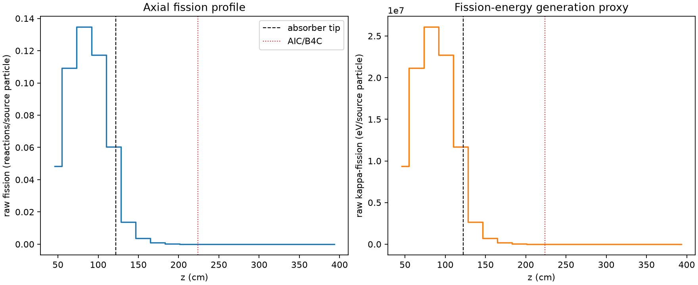
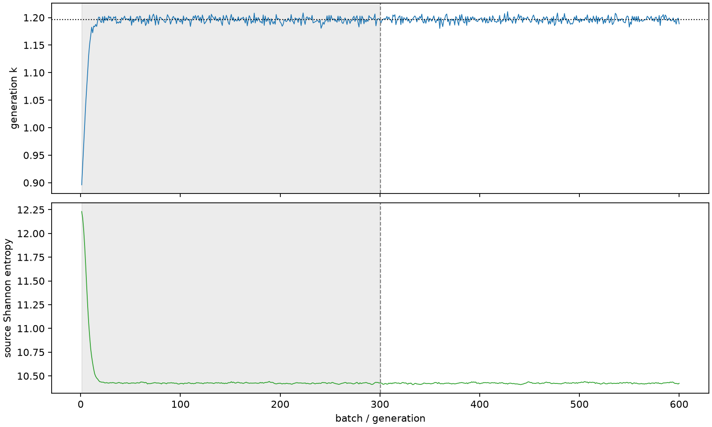

| field | value |
|---|---|
| experiment | V2-STAGE_256_OGRENCI_02-0007 |
| k | 1.1962498953285179 |
| MC standard error | 0.00018844998584934336 |
| seconds | 916.012436363002 |
| acceptance | not_assessed |
| convergence | review_required |
Completed is output integrity only; physical and statistical review required. Zero tallies do not prove zero production or zero uncertainty.
| diagnostic | value |
|---|---|
| geometric fuel voxels | 5280 |
| zero fission tally voxels | 1476 |
| low signal fuel voxels | 2733 |
| low signal fission share | 0.00010332347720618069 |
| low signal kappa share | 0.00010335511416312173 |
| important fission share | 0.9503080070659264 |
| previous filter included | 2547 |
| duration estimate s | 1562.5173488400023 |
| actual minus estimate s | -646.5049124770003 |
| fission relative MC error | statistics |
|---|---|
| all_geometric_fuel | {"voxels": 5280, "positive_mean_voxels": 3804, "zero_mean_voxels": 1476, "undefined_relative_error_voxels": 1476, "median": 0.05120478952961225, "p95": 1.0, "maximum": 1.0000000000000002} |
| low_signal | {"voxels": 2733, "positive_mean_voxels": 1257, "zero_mean_voxels": 1476, "undefined_relative_error_voxels": 1476, "median": 0.6725993792575039, "p95": 1.0, "maximum": 1.0000000000000002} |
| important_95pct | {"voxels": 1287, "positive_mean_voxels": 1287, "zero_mean_voxels": 0, "undefined_relative_error_voxels": 0, "median": 0.005415417517652371, "p95": 0.008136233494070529, "maximum": 0.009442856146627512} |
| outside_previous_filter | {"voxels": 2733, "positive_mean_voxels": 1257, "zero_mean_voxels": 1476, "undefined_relative_error_voxels": 1476, "median": 0.6725993792575039, "p95": 1.0, "maximum": 1.0000000000000002} |
| kappa_fission relative MC error | statistics |
|---|---|
| all_geometric_fuel | {"voxels": 5280, "positive_mean_voxels": 3804, "zero_mean_voxels": 1476, "undefined_relative_error_voxels": 1476, "median": 0.05112962974782687, "p95": 1.0, "maximum": 1.0000000000000002} |
| low_signal | {"voxels": 2733, "positive_mean_voxels": 1257, "zero_mean_voxels": 1476, "undefined_relative_error_voxels": 1476, "median": 0.6720415842079817, "p95": 1.0, "maximum": 1.0000000000000002} |
| important_95pct | {"voxels": 1287, "positive_mean_voxels": 1287, "zero_mean_voxels": 0, "undefined_relative_error_voxels": 0, "median": 0.005409690409307464, "p95": 0.008127370848714656, "maximum": 0.009431650145009109} |
| outside_previous_filter | {"voxels": 2733, "positive_mean_voxels": 1257, "zero_mean_voxels": 1476, "undefined_relative_error_voxels": 1476, "median": 0.6720415842079817, "p95": 1.0, "maximum": 1.0000000000000002} |
| axial bin | fission share | kappa-fission share |
|---|---|---|
| 1 | 0.09890448004434134 | 0.0989067280183349 |
| 2 | 0.22373417040565796 | 0.22372906399472442 |
| 3 | 0.2756174237697963 | 0.27561025678740075 |
| 4 | 0.24035699350374873 | 0.2403512409587075 |
| 5 | 0.12336961935973599 | 0.12337381840148055 |
| 6 | 0.027939142443947358 | 0.027947526230588177 |
| 7 | 0.0073712472847265245 | 0.007373556660973903 |
| 8 | 0.001968518919354898 | 0.0019691738483405513 |
| 9 | 0.0005395827603185254 | 0.000539749725199847 |
| 10 | 0.0001462017721406138 | 0.00014624684766826882 |
| 11 | 3.920379619358369e-05 | 3.921636907477698e-05 |
| 12 | 9.640718980548294e-06 | 9.644704664853133e-06 |
| 13 | 2.1969497131739864e-06 | 2.198212275370654e-06 |
| 14 | 5.488434479983888e-07 | 5.494031209573383e-07 |
| 15 | 3.4621812265161525e-07 | 3.464490404747786e-07 |
| 16 | 5.767088156937263e-07 | 5.770151212266504e-07 |
| 17 | 1.0650095806918144e-07 | 1.0637328345620766e-07 |
| 18 | 0.0 | 0.0 |
| 19 | 0.0 | 0.0 |
| 20 | 0.0 | 0.0 |
Histories include the inactive-to-active transition at batch 300. kappa-fission approximates fission energy production, not total heat deposition.

